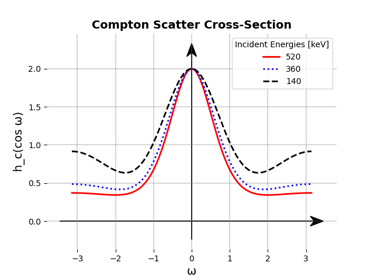
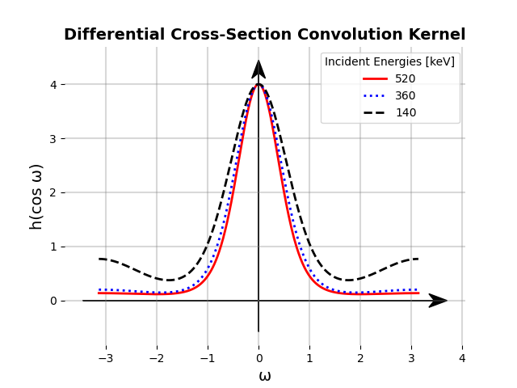
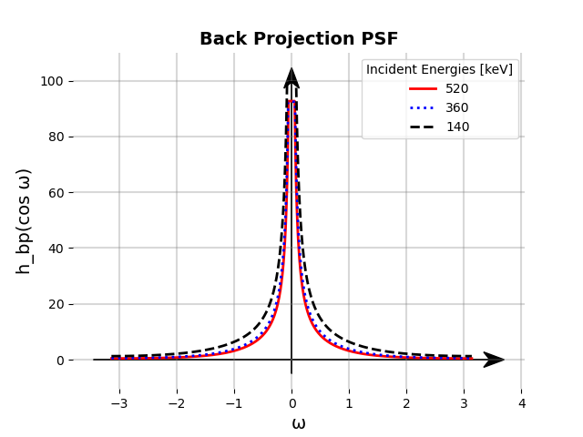

Delving into the practicalities of the inverse problem of reconstructing Compton camera images will lead you to Legandre polynomials or Maximum Likelihood methods, most likely.
Since last week I have been interested in both the analytical reconstruction techniques as well as some of the iterative methods.
Regarding iterative methods, what I found is that it is difficult to get a feeling on how the iterative methods properly work simply because the algorithms (I write mine in Python) is increadibly slow. However, I have made some progress and have been able to reproduce some results but in a very corse voxel space. One way of simplifying things is to simplify the system matrix. I was reading Ref. [1] where they sort of reduce the forward problem to the following statement:
The probability of observing a given measurement $$ A_i = [E_0,E’,r_{01},r_{12}] $$ given a gamma ray incident from pixel $j$ is $$ t_{ij} = \exp(-\sigma_t(E_0)r_{01})\frac{\mathrm{d}\sigma_C}{\mathrm{d}\Omega}\exp(-\sigma_t(E’)r_{12}), $$ where $\sigma_t(E)$ is the total absorbtion cross section at energy $E$, $E_0$ and $E’$ the initial and scattered gamma-ray energies, respectively, $r_{01}$ the attenuation distance between the first and second interactions, and $\mathrm{d}\sigma_C/\mathrm{d}\Omega$ the Compton corss section divided by $r_{12}^2$.
Basically you could write a function calculating the values $\sigma_t(E)$ and $\mathrm{d}\sigma_C/\mathrm{d}\Omega$ and the distances on the fly without storing the values in huge matrices. I think this approach could be fruitful.
The computational complexity of the list-mode likelihood methods are a huge issue still. However, being clever like in Refs. [2] & [3], one can speed up these types of algorithms by a factor of 250(!) by running it on a 8 GPU units.
An interesting counterpart to the iterative modeling is the analytical methods. I read Ref. [4], where they derive all nessecery properties , like the point spread function and deconvolution kernel, to be able to fully (at least in theory disregarding numerical issues) reconstruct any image obtained from Compton camera event data. They start with the following statement:
The probability distribution $p(\omega)$ of measuring an event with scatter angle $\omega$ is proportional to the differential cross-section, $h(\cos\omega)$.
Note that we are ignoring spatial and energy resolution of the detector as well as absorption probabilities within the detector. This model is a perfect study to understand the mathematical issues arising from the geometry of the Compton camera. They conclude, like in Ref. [5], that simply applying a spherical deconvolution will not work. Specifically, consider the model $$ f(\Omega_2) = \int\mathrm{d}\Omega_1 g(\Omega_1)h(\cos\omega) $$ where $f(\Omega_2)$ is the measured image intesity summed over all measured scatter angles and using the statement above. One might be tempted to try to invert this equation directly, and it is accually possible! The show in the Appendix A that there exists an $h^{-1}(\cos\omega)$ such that $$ g(\Omega_1) = \int \mathrm{d}\Omega_2 f(\Omega_2)h^{-1}(\cos\omega) $$ where $$ h^{-1}(\cos\omega) = \sum_{n=0}^\infty \left(\frac{2n+1}{4\pi}\right)\frac{P_n(\cos\omega)}{H_n} $$ and $$ H_n = \frac{2n+1}{2}\int\mathrm{d}(\cos\omega)h(\cos\omega)P_n(\cos\omega) $$ and the basis function $P_n(\cos\omega)$ are Legandre polynomials. However, this solution is not stable since the coefficient $H_n$ approach zero, and since they are in the denominator in the expression for $h^{-1}(\cos\omega)$ this function is not stable. What they do is to define the summation image $g’(\Omega’_1)$ which they prove can be expressed by an angular convolution of the line projections with an appropriate point spread function. Then one can reconstruct $g(\Omega_1)$ from $g’(\Omega_1’)$. The point spread function, called $h_{bp}(\cos\omega)$ is then derived and the result is $$ h_{bp}(\cos\omega) = \frac{1}{\sqrt{1-\cos^2\omega/2}}\int_{-\cos\omega/2}^{\cos\omega/2}\mathrm{d}z\frac{h(z)}{\sqrt{\cos^2\omega/2-z^2}}, $$ with $$ h(\cos\omega) = h_c(\cos\omega)\frac{1+\cos^2\omega+\frac{\gamma^2(1-\cos\omega)^2}{1+\gamma(1-\cos\omega)}}{(1+\gamma(1-\cos\omega))^2} $$ and $h_c(\cos\omega)$ being the Klein-Nishima cross-section, see figure 1. The angle $\omega$ in the expression above is the angle from a $z$-axis between the axis of the source point and the axis of the cone.
 Figure 1: $h_c(\cos\omega)$
The differential cross section convolution kernel $h(\cos\omega)$ can be seen in figure 2.
 Figure 2: $h(\cos\omega)$
They said that the integral above has an analytic solution but when I triend to calculate it in scipy it did not result in anything. I did manage to replicate the resulting point spread function, see figure 3.
 Figure 3: $h_bp(\cos\omega)$
It would be interesting to expand this in Legandre polynomials and deconvolve the measured image intesity summed over scattering angles and compare with an iterative method like LM-MLEM. I suppose the system matrix would take the simple form above shown in Ref. [1], if I manage to write efficient code.
Conclusion#
Iterative methods are probably the best but they are very computationaly heavy. For a toy model, one could try to simplify the system matrix to just a few calculation for each element.
Analytical methods are simple in there assumptions but can easily be expanded upon. Aslo, they are fast and efficient. It seems that the best approach is to expand some transformed version of the point spread function in Legandre polynomials, such that the expansion coefficients are far from zero. Then deconvolve the source responce with the expression of the inverse transformed point spread function.
References#
[1] 4$\pi$ Compton Imaging Using 3-D Position-Sensitive CdZnTe Detector Via Weighted List-Mode Maximum Likelihood, Lehner, C.E; He, Zhong; Zhang, Feng Link
[2]Maximum Likelihood Event Estimation and List-mode Image Reconstruction on GPU Hardware, Caucci, Luca; Furenlid, Lars R.; Barrett, Harrison H. Link
[3] List-mode MLEM Image Reconstruction from 3D ML Position Estimates, Caucci, Luca; Furenlid, Lars R.; Barrett, Harrison H. Link
[4] Reconstruction of cone-beam projections from Compton scattered data, Parra L.C Link
[5] Application of spherical harmonics to image reconstruction for the Compton camera, Basko, Roman; Zeng, Gengsheng L; Gullberg, Grant T Link